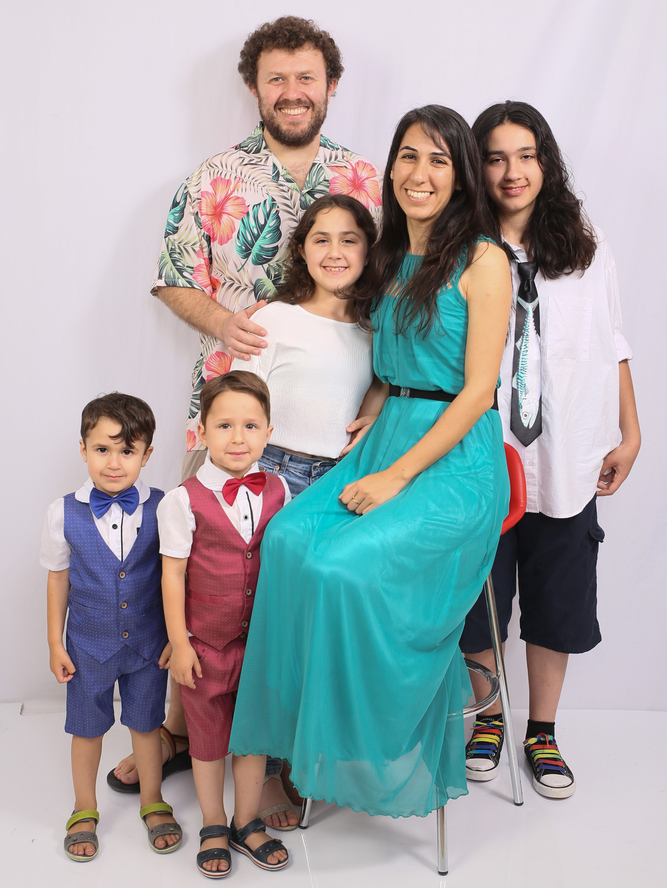

<div class="row">
  <div class="col-md-12">
    <h3>Personal</h3>
    <p>
      I am married to 
      <a href="http://arnold.filtser.com/" target="_blank">Arnold Filtser</a>, 
      who is a faculty member in the Computer Science Department at Bar Ilan University.
      I am also a mother to two clever and curious girls, 
      <a href="http://naama.filtser.com/" target="_blank">Naama</a> and 
      <a href="http://hadass.filtser.com/" target="_blank">Hadass</a>, 
      and two cute and funny boys, Ehud and Boaz.
    </p>
    <p>
      Things that I like to do other than research: 
      <a href="http://www.ravelry.com/designers/omrit-filtser" target="_blank">crocheting</a>, 
      <a href="https://www.textillia.com/members/omrit">sewing</a>, 
      <a href="https://www.deviantart.com/omrit/gallery">drawing</a>, 
      <a href="./img/ski.jpg">skiing</a>.
    </p>
       
  </div>
</div>
